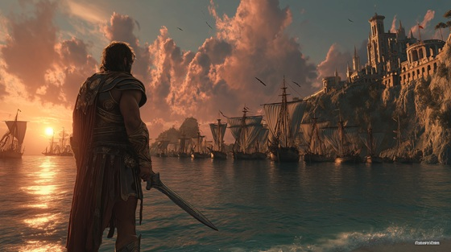

When Athens once again faced sending its children to die, Theseus, son of King Aegeus, volunteered to go — not as a sacrifice, but as a weapon.
He vowed to kill the Minotaur, end the terror, and break the curse laid on his city.
"Theseus: Oath of the Blade" captures the hero’s first cry of rebellion: young, fearless, burning with the resolve to shatter the gods’ cruel games.
Theseus: Oath of the Blade
No crown shall hide, no throne shall save
The blood they steal, the dreams they grave
I raise my hand, I bear the flame—
I carve my oath upon their shame
No king shall bind, no curse shall chain—
The blade I swear shall break their reign
Oath of the blade, blood of the skies
I ride the storm, I break the lies
The Labyrinth calls, the monster waits—
I swear to tear apart its gates
They weep, they wail, they turn their eyes
But I will stand, I will not hide
Through sacred halls, through cursed breath—
I march to dance with blood and death
No gods shall turn, no fate shall break—
The oath I forge, the life I stake
Oath of the blade, blood of the skies
I ride the storm, I break the lies
The Labyrinth calls, the monster waits—
I swear to tear apart its gates
I raise my voice, I draw my line
From mortal bones shall rise divine
The beast shall fall, the crown shall weep—
The blade shall wake what kings would sleep
Stone to stone, breath to breath
I walk the road between life and death
No fear, no chain shall bind my hand—
I am the fire within the land
Oath of the blade, blood of the skies
I ride the storm, I break the lies
The tyrants fall, the walls collapse—
The blade of Athens bears the past
Oath of the blade, carved in flame—
The beast shall fall before my name